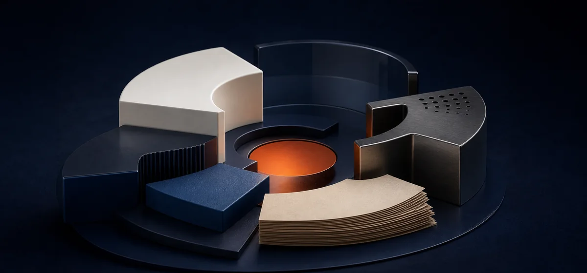

Structured knowledge. Controlled change. Durable systems.
Vellis is model-engineered knowledge infrastructure for AI agents: a typed, locally owned system for knowledge that must be shared, changed, and recovered without losing meaning. MCP-capable agents operate against the same explicit graph contract.
- Clone the repo and run the graph engine locally
- Connect Claude, Codex, and other MCP-capable tools
- Model schemas, provenance, and decisions as a typed graph
- Query, write, validate, migrate, snapshot, and replay
Start here
Run it · understand it · build with usVellis Engine
Run and inspect the Apache-licensed typed graph engine, its MCP surface, and its snapshot-and-replay workflow.
Explore the engine →Thesis
Read why durable AI systems need explicit models, governed change, and recoverable state.
Read the thesis →
Community
Clone Vellis, follow releases, ask questions, and share what you are learning with the lab.
Join the community →Clone
Pull the repo and run the graph engine on your machine.
→Model
Define typed nodes, links, and constraints for the work.
→Connect
Point MCP-capable agents at one shared, graph-backed knowledge model.
→Iterate
Read, write, migrate, and validate changes with schema checks.
→Reuse
Each pass leaves explicit, durable knowledge for the next one.
Build with the open graph
Vellis starts as a repo you can run and shape yourself. Capable teams can carry it a long way; when the graph needs operating controls, audit paths, approval workflows, or production hardening, Volant Partners can help.
Follow the lab work
Read the Thesis, browse Perspectives, or send a note if you want to shape the next open project.
Browse Perspectives